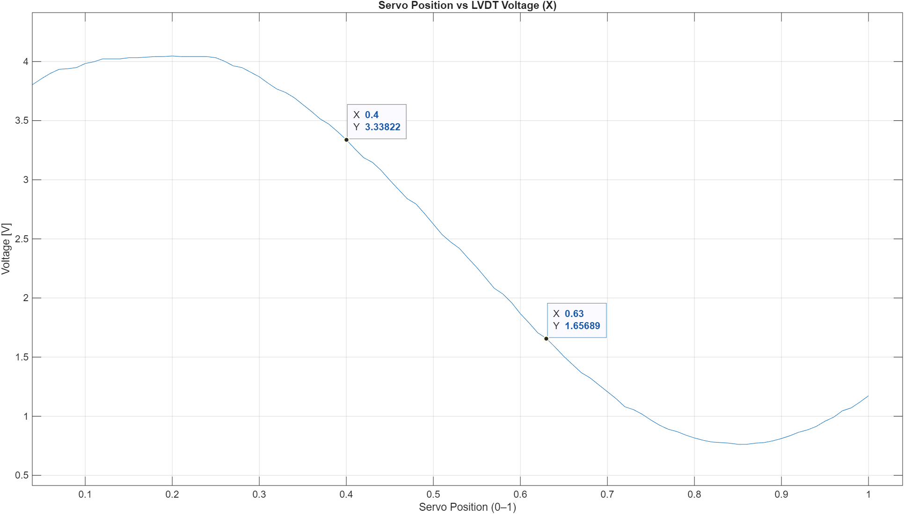
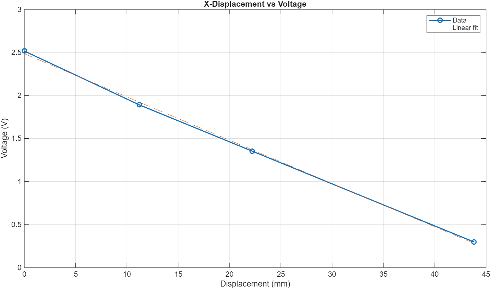
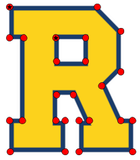
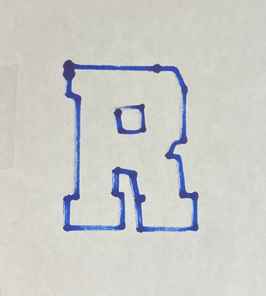

Approach
- System: designed and implemented a closed-loop 2D motion control system. Two LVDTs measured stage position, two 270° servomotors drove the stage through cam disks, and an Arduino Uno controlled from MATLAB read the sensors and commanded the servos.
- Calibration: swept each servo to find the linear range of the cam response (102.6°–194.4° in x, 70.2°–164.7° in y), then calibrated each LVDT against a caliper-measured block over 0–43.6 mm, giving linear voltage-displacement fits (Dx = −20.29 Vx + 70.41, Dy = −21.35 Vy + 91.32).
- Control: encoded the fits and degrees-per-millimeter relationships into custom MATLAB control functions that read the LVDTs before each move, compute the servo command, and clamp it to the calibrated range to stay in the linear region.
- Drawing: wrote a MATLAB program that converted the logo’s vertices into scaled millimeter coordinates and drove the stage to reproduce it, first as dots to verify positions, then in continuous lines.


Results
- Both drawings clearly reproduced the logo, with straight horizontal and vertical edges and overall dimensions matching the scaled targets. Small, random offsets at corners pointed to servo precision rather than the code.
- Diagonals were slightly wavy because both servos move at the same rate, limiting simultaneous moves to 45°. Scaling each axis’s speed to the line angle would allow straight diagonals at any angle, as on a CNC machine or printer.

